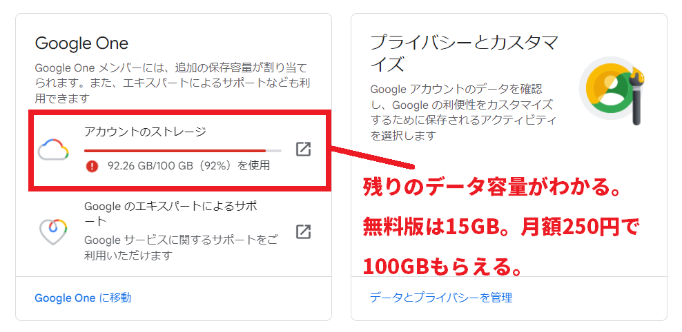
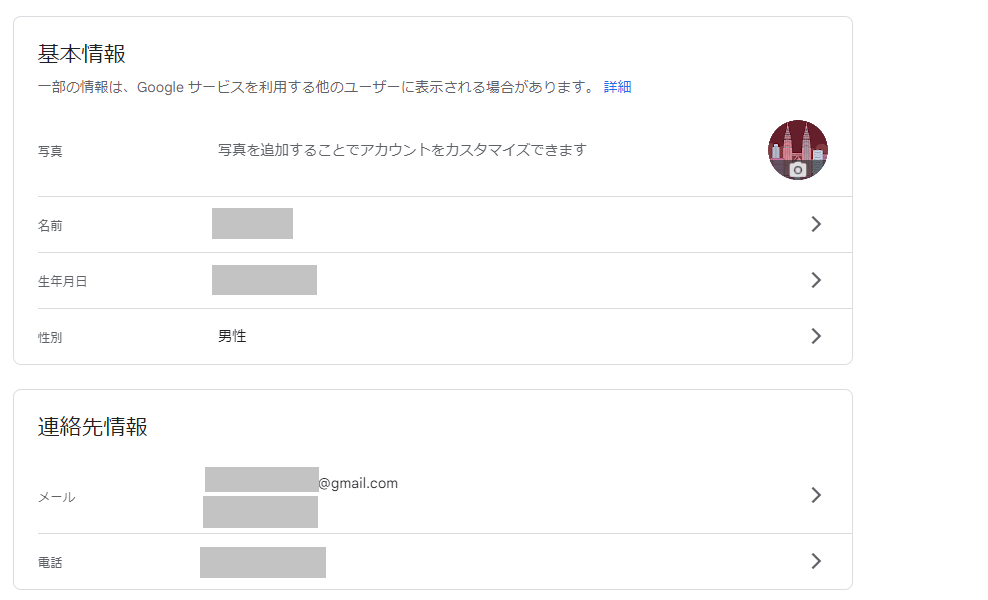
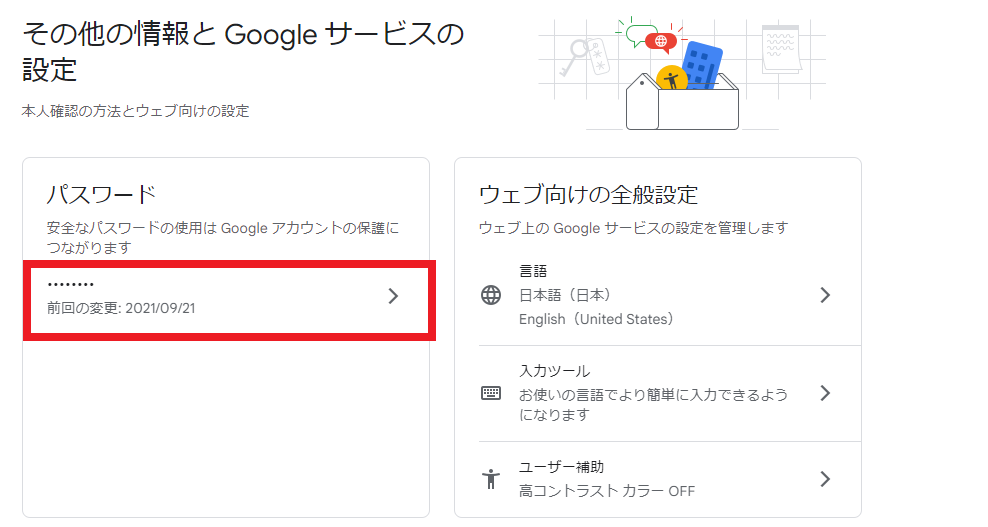
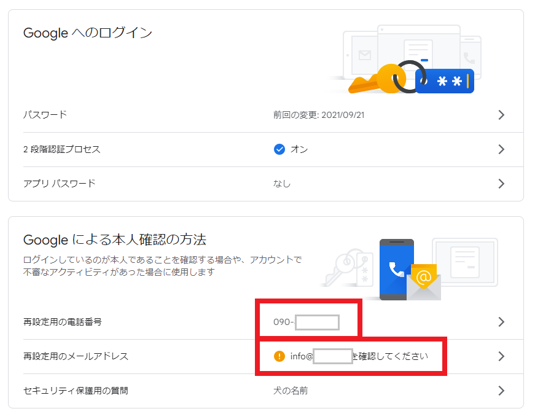

Googleが提供するGmailやGoogleドライブなどの無料Webサービス。またはchromeやYoutubeなどを利用する際にGoogleアカウントが必要になります。
このGoogleアカウントでは様々な設定が出来るようになっています。設定を変更することで「Gmailの宛名を変更」することができたり、Googleアカウントのパスワードも変更できます。 Cromeの履歴情報や課金情報などもGoogleアカウントで管理しています。
必ずしも設定を行わなくてはいけないという事ではありません。諸所の設定をせずとも各サービスは利用できます。 ただし、Googleアカウントの設定を理解し、正しい活用方法を知っておけばよりスムーズなインターネット生活が送れます。
このページではGoogleアカウントの管理画面の使い方や、どんな設定が出来るのかなどについて詳しく解説していきます。
まずGoogleアカウントで設定できること確認できることを説明します。
Googleアカウントのデータ容量は15GB付与されますが、残りのデータ容量がどれくらいなのかを確認することが出来ます。15GBを超えそうな場合は100GB（月額250円）の有料プランに乗換えが出来ます。

名前やプロフィールアイコンなどの登録情報を変更できます。この登録情報はサインインしている時にそのパソコンやスマホで表示されます。 またGOOGLEマップなどGoogleのサービスにコメントを書いた時などにもプロフィールが表示されることになります。
生年月日の登録はいざと言う時の本人認証に。メールアドレスの登録はこれもパスワード再発行の時の認証に役立ちますので予め登録しておくと良いでしょう。 電話番号も本人確認のための2重認証で使います。

GmailやGoogleドライブなどのWebサービスにサインインするためのパスワードを変更できます。

生年月日の情報を登録したり、携帯電話の電話番号を登録することで2段階認証を設定することが出来ます。

Googleドライブの容量を増やすためアップグレードプランに加入したり、Googleの有料サービスに入った場合、Googleアカウントで課金情報を管理することになります。 どんなサービスに入っていて、毎月いくら発生しているのかを確認できます。
Googleアカウントは使っているスマホやパソコンの位置情報も収集しているため、どのデバイスをどこで使ったのかといったプライバシー情報も確認できてしまいます。 これはスマートフォンの機能にもありますね。そういったプライバシー情報の設定についてもGoogleアカウントで管理することが出来ます
Googleアカウントにおける設定変更の詳細とそれぞれが持つ機能について紹介します。
プロフィールアイコンや名前などの基本情報は一部のGoogleサービスを利用する際、他のユーザーが確認することが出来ます。 Gmail、Googleハングアウトによる連絡。またGoogleマップ、Youtube、GooglePlayにコメントした際にプロフィールが表示されます。
写真（プロフィールアイコン）を変更できます。
名前については「名」＋「性」で変更できます。プロフィールアイコンを登録していない場合、アイコンの表示には「名」の部分がテキスト形式で表示されます。
また、ここでGoogleアカウントで登録する名前は
生年月日も設定できます。生年月日は本人認証の際に聞かれることがあります。またGoogleアカウントは13歳未満の年齢では作成することが出来ません。 そのため年齢確認の意味もあります。
メールアドレスはGoogleアカウント登録時のGmailが設定されていますが、さらに3つのメールアドレスが設定できるようになっています。 パスワードを忘れてしまった時のために再設定用のアドレスについては優先的に設定しておきましょう。
再設定用のメールアドレスと同様にスマホの電話番号も設定をしておくといざと言う時に役立ちます。 アカウントのセキュリティ通知の受信やパスワードを忘れた場合の再設定用の連絡がショートメールに入るようになります。
パスワードの変更もできます。
Googleでは表示するコンテンツの最適化のため、位置情報や検索情報を収集しています。これらの設定を行うことが出来ます。
次の3つの履歴についてオン、オフの設定が行えます。

demiglaze
Web制作を始めて約19年になります（HTML/css、Photoshop、Webマーケティング）。2005年から当サイトの運営を開始。 これまでに300個以上のドメインを取得、10社を超えるレンタルサーバーを利用してきました。